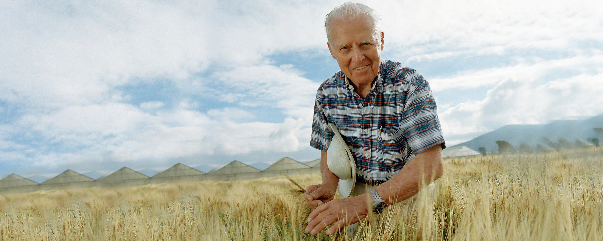
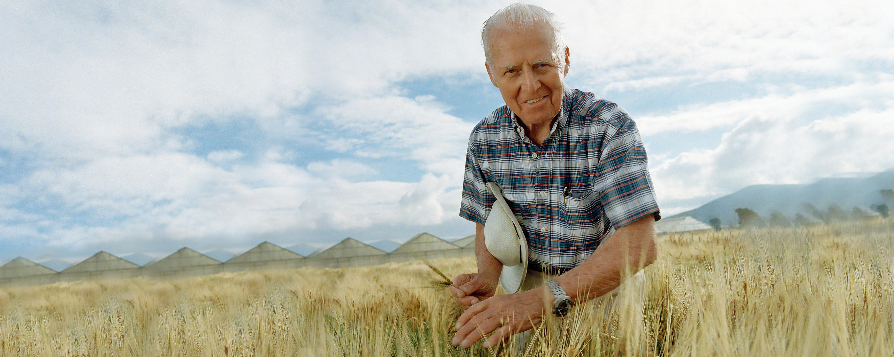

Dr. Norman Borlaug


 

Norman Borlaug images
About Norman Borlaug
In 1970 Norman E. Borlaug was awarded the Nobel Peace Prize for a lifetime of work to feed a hungry world. Although a scientist with outstanding contributions, perhaps Dr. Borlaug's greatest achievement has been his unending struggle to integrate the various streams of agricultural research into viable technologies and to convince political leaders to bring these advances to fruition.
Born of Norwegian descent, Dr. Borlaug was raised in Cresco, a small farming community in northeast Iowa. He learned his work ethic on a small mixed crop and livestock family farm and obtained initial education in a one-room rural school house.
Dr. Borlaug's skills as an athlete (mainly in wrestling) opened the door for him to attend the University of Minnesota, where he studied to be a forester, wrestled, and worked various odd jobs. After graduating in 1937 with a BS in Forestry, he went to work for the United States Forest Service, initially in Idaho and later in Massachusetts and Connecticut. He returned to graduate school at the University of Minnesota, and took up the study of plant pathology, receiving his Ph.D. in 1942. Years later, the University of Minnesota would house its plant pathology and agronomy programs in Borlaug Hall.
After graduation, Dr. Borlaug worked as a Microbiologist for E.I. Dupont de Nemours, until being released from his wartime service.
In 1944, Dr. Borlaug participated in the Rockefeller Foundation's pioneering technical assistance program in Mexico, where he was a research scientist in charge of wheat improvement. For the next sixteen years, he worked to solve a series of wheat production problems that were limiting wheat cultivation in Mexico and to help train a whole generation of young Mexican scientists.
The work in Mexico not only had a profound impact on Dr. Borlaug's life and philosophy of agriculture research and development, but also on agricultural production, first in Mexico and later in many parts of the world.
It was on the research stations and farmers' fields of Mexico that Dr. Borlaug developed successive generations of wheat varieties with broad and stable disease resistance, broad adaptation to growing conditions across many degrees of latitude, and with exceedingly high yield potential.
These new wheat varieties and improved crop management practices transformed agricultural production in Mexico during the 1940's and 1950's and later in Asia and Latin America, sparking what today is known as the "Green Revolution." Because of his achievements to prevent hunger, famine and misery around the world, it is said that Dr. Borlaug has "saved more lives than any other person who has ever lived."